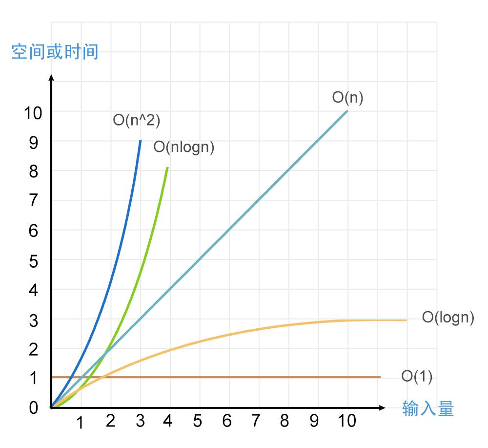
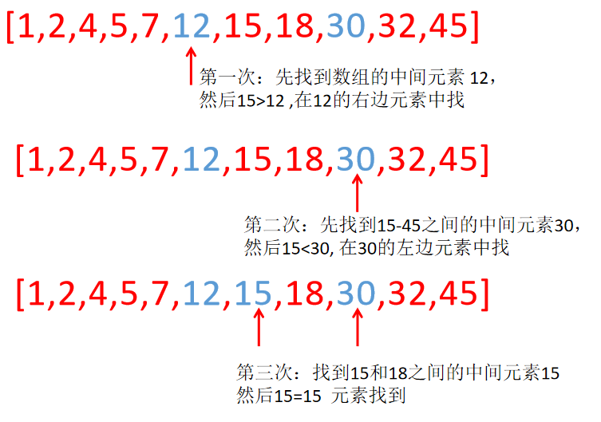
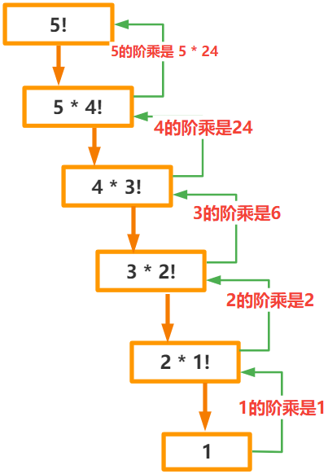
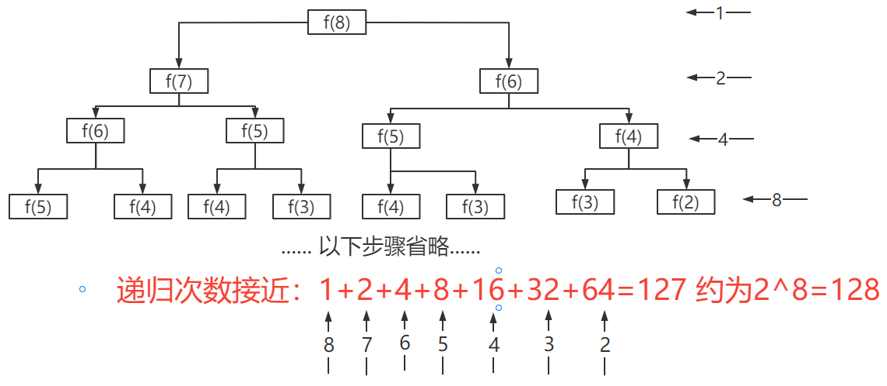

一、函数的理解
- 函数就是语句的封装，可以让封装后的代码很方便的被反复使用
- 函数具有一次定义，多次调用‘的优点
- 使用函数，可以简化代码，让代码更具有可读性
计算任意两个数之间所有数之和
- 比如1-10，10-20，20-30 等
- 按照之前的学习，我们只能根据初始值和范围写for循环，而且每计算一次，就要写一次 for 循环
var sum = 0;
for (var i = 1; i <= 10; i++) {
sum += i;
}
console.log(sum); // 55
>
var sum = 0;
for (var i = 10; i <= 20; i++) {
sum += i;
}
console.log(sum); // 165
有了函数之后，我们就可以实现输入起始的两个数，自动就出来我们想要的结果
二、函数的声明和调用
- 和变量一样，函数必须先定义（声明）然后才能使用
- 定义一个函数，有两种方式
- 方式1：以函数声明的方式-创建一个函数
- 使用
function关键字声明函数，必需全部小写，function是 “功能” 的意思 - 函数名必须符合JS标识符命名规则
- ( ) 圆括号中是形参列表，即使没有形参，也必须书写圆括号
- { } 大括号里是函数体语句
- 使用
// 声明函数
function 函数名() {
// 函数体语句
}
>
function hello() {
console.log("大家好！");
}
- 方式2：以函数表达式的方式创建一个函数
function(){ }是一个匿名函数，即没有函数名的函数。- 但是我们最后要使用这个函数，所以我们把这个匿名函数赋值给了一个变量
- 后面我们通过这个变量来调用这个函数
- 匿名函数，经常以回调函数的形式出现
var 变量 = function () {
// 函数体语句
};
>
var hello = function () {
console.log("大家好！");
};
- 函数的调用
- 调用函数非常简单，只需在函数名字/变量名后书写圆括号对即可
- 所谓函数的调用，就是执行函数体内的所有语句。
函数被声明后，是不会自动执行的，只有被调用才会被执行
- 通过方式1声明的函数：
function hello() {
console.log("大家好！");
}
hello();
// 函数定义一次，可以多次调用
hello();
hello();
- 通过方式2声明的函数：
var hello = function () {
console.log("大家好！");
};
hello();
// 函数定义一次，可以多次调用
hello();
- 函数类型判断
- 利用 typeof 来检测函数类型，得到 function
function fn() {}
typeof fn;
console.log(typeof fn); // 'function'
console.log(typeof fn === "function");//true
三、函数的参数
- 函数参数分类
参数 说明 形参 在声明函数时，我们可以在函数名后面的小括号（）中添加一些参数，这些参数被称为形参 实参 在调用函数时，我们可以在函数名后面的小括号（）中，添加的参数，这些参数被称为实参
- 在函数的()中可以指定
>=0个参数，参数可以是任意类型- 多个参数之间用
,逗号隔开
// 函数声明，这里的a,b被称为形参
function sum(a, b) {
console.log(a + b);
}
>
// 调用函数
sum(1, 2); // 这里的 1，2 被称为 实参
sum(2, 3); // 这里的 2，3 被称为 实参
- 形参与实参的关系
- 在函数调用时，实参会将其值，赋值给到函数声明时对应的形参。
- 实参与形参在赋值时，是一一对应的顺序，所以顺序不要弄错
我们以下面这个代码的执行过程来作为讲解
// 函数声明，这里的a,b被称为 形参
function sum(a, b) {
console.log(a + b);
}
// 调用函数，
sum(1, 2); // 这里的 1，2被称为 实参
- 代码从上往下执行
- 遇到
sum(1,2)被调用，相当于就要开始执行sum函数。- 在执行代码前，还有一个预解析的过程，这个时候，会根据形参个数，来创建对应的变量，接收传过来的实参的值。相当于如下代码：
function sum() {
var a = 1;
var b = 2;
console.log(a + b);//3
}
- 实参与形参个数不同时
情况1：当实参个数 > 形参个数时- 对函数本身的功能并没有任何的影响
- 实参和形参一一对应，多余的实参没有对应的形参接应它，但也不会有什么影响
情况2：当实参个数 < 形参个数时
- 会引发报错，最终得不到想要的结果
- 因为如果对应的形参没有接受到对应实参的值，则默认值是
undefined
// a,b,c 是形参
function sum(a, b, c) {
// 这里的c没有接受任何值，则默认值是undefined，undefined 进行任何运算结果都是 NaN
var sum = a + b + c;
console.log(sum);
}
>
// 2,5 是实参
sum(2, 5); // NaN
在实际开发中，实参和形参尽量相同，否则会引发报错或 NaN
总结：形参和实参
| 参数个数 | 输出结果 |
|---|---|
| 实参 = 形参 | 正常输出结果 |
| 实参 > 形参 | 正常输出结果 |
| 实参 < 形参 | 形参默认值为undefined，多出的形参没有对应实参，则最后得不到想要的结果 |
- 参数默认值
- 如果实参的个数小于形成，那函数在调用后，则会报错，或得不到想要的结果。那有没有办法可以规避这种问题呢 ？有，就是我们接下来要讲到的参数的默认值。
- 在函数声明时，我们可以给形参赋值，这个值我们称为参数的默认值
- 如果在函数调用时，没有传入对应的实参，则参数值就以默认值代替
- 如果传入了对应的实参，参数值就以实参传过来的值为准。
方式1：
function sum(a=0,b) {
console.log(a + b);
}
sum(); // NaN 没有对应实参，则 采用默认值 a=0,b=undefined ,即a+b=NaN
sum(1); // NaN 只传了第1个实参，则a=1,b=undefined，即a+b=NaN
sum(1, 2); // 3 传入2个实参，则a=1,b=2,即a+b=3
sum(,2); // 报错
- 注意形参与实参在接受值时，是一一对应关系
- 绝对不要这样写：
sum(,2);
方式2：
// 形参a，b同时赋初始值
function sum(a, b) {
// a,b 如果没有值，则默认为undefined，undefined转boolean是false
a = a || 0; // a有值，则用a的值，没值用0代替
b = b || 0; // b有值，则用b的值，没值用0代替
console.log(a + b);
}
形参，在函数内部不需要用
var声明，直接使用就可以
- 注意场景：当a等于布尔值为
false的值时，不适合用该方法，例如：null、undefined、””
- 案例1：计算任意两个数之间所有数之和
- 首先要判断输入的是否是数字，如果不是数字，则把参数默认值设为 0
- 然后要判断两个数的大小，for 循环遍历两个数之间的所有数，用累加器累加
- 最后输出累加器的值。
知识点1：
条件表达式 ? 表达式1 : 表达式2;
执行流程：
- 首先对条件表达式进行求值
- 如果条件表达式的值为 true，则执行语句 1，并返回执行结果
- 如果条件表达式的值为 false，则执行语句 2，并返回执行结果
知识点2：
判断是否为数字
typeof的值为numberNaN为不是数字的数字类型，所以typeof筛不掉它isNaN：判断这个参数是否“不是数值”所以数字同时满足
typeof a === "number"和!isNaN()为true;
function sum(a, b) {
// 如果a是数字，则返回a，否则返回0
a = typeof a === "number" && !isNaN(a) ? a : 0;
// 如果b是数字，则返回b，否则返回0
b = typeof b === "number" && !isNaN(b) ? b : 0;
var sum = 0;
if (a >= b) {
for (var i = b; i <= a; i++) {
sum += i;
}
} else {
for (var i = a; i <= b; i++) {
sum += i;
}
}
console.log(sum);
}
sum(-1, -2); // -3
sum(1, 2); // 3
sum(-1, 5); // 14
sum(); // 0
sum("-1", 0); // 0
总结：判断是否为纯数字
方法1：
- 先用
Number或者+转换成数字类型
- 缺陷：
""会被转成0- 用
isNaN判断是不是数字，NaN为不是数字的数字类型，可以过滤NaN
方法2：
- 同时满足”数字类型”和数字
- typeof() === “Number”，typeof 返回值的类型都是字符串类型，所以要加双引号
- isNaN()为
false
- 案例2:写一个函数，该函数对用户输入的用户名进行验证
- 当用户输入的用户名<4 位数时，弹出提示“用户名不能小于 4 位数”
- 当用户输入的用户名>=4 位并且<=8 位时，弹出提示”用户名格式正确”
- 当用户输入的用户名>8 位数时，弹出提示“用户名不能大于 8 位数”
function userMatch(username) {
if (username.length < 4) {
alert("用户名不能小于4位");
} else if (username.length <= 8) {
alert("用户名格式正确");
} else {
alert("用户名不能大于8位");
}
}
var username = prompt("请输入用户名");
userMatch(username);
arguments实参列表如果我们在函数声明时，不确定我们到底要几个形参数，而希望在函数调用时，传递几个实参，就接受几个实参。这个时候
arguments就派上用场了。- arguments实际上是当前函数的一个内置对象，函数调用时创建
- 函数内arguments表示它接收到的实参列表
arguments 是一个类数组对象，所谓的类数组对象，具有以下特点：
- 具有
length属性- 可以用
[]方括号书写，用下标方式访问对象中属性值，下标从0开始- 不具备数组的所有方法，如
push,pop,unshift,shift等方法，arguments 都没有
不管用户传入多少个实际参数，永远能够计算他们的和
function sum() {
var sum = 0;
for (var i = 0; i < arguments.length; i++) {
sum += arguments[i];
}
console.log("所有参数的和是：" + sum);
}
>
sum(11, 22, 33, 44, 55); // 165
sum(66); // 66
sum(-3, 9); // 6
- arguments 的注意事项
- 函数内
arguments表示它接收到的实参列表 arguments对象的值不反映参数的默认值
- 函数内
function sum(a = 1, b = 2) {
console.log(arguments);//[3,5, callee:(...) ,Symbol(Symbol.iterator): ƒ]
console.log(arguments[0]);//3
console.log(arguments[1]);//5
}
sum(3, 5);
sum();
参数的作用
- 如果函数体内的某些值不能固定，我们可以在调用函数时，通过实参的形式传递不同值进去。
- 如上面代码中，求两个数的和，这两个数 a,b 的值是不固定的，就可以通过传参来解决
函数的封装
- 所谓函数的封装，就是把具有一定功能的代码，通过函数的形式封装起来
- 当我们需要使用的时候，只需要调用下这个函数就可以。
- 类数组转换为数组
arguments 是一个类数组对象，所谓的类数组对象，具有以下特点
- 肯定是一个对象，同时具有
length属性 - 可以用
[]方括号，书写下标方式访问对象中属性值，下标从0开始 - 它并不拥有全部的 Array 对象的操作方法，如push,pop,unshift,shift等方法，arguments 都没有
类数组是一个对象，他是
Object的实例，而数组是Array的实例，所以类数组并不具有 Array 对象的方法
但类数组和数组，他们的原型终点都指向Object的原型，所以他们都具有Object对象上的方法
- 肯定是一个对象，同时具有
function fn() {
var isArr = Array.isArray(arguments);
console.log(isArr); // false 不是数组
console.log(typeof arguments); // object 是一个对象
console.log(arguments instanceof Object); // true 是Object的实例
}
fn();
类数组转换为数组的几种方法：
我们想要类数组拥有数组的相关方法，则可以把类数组转换为数组再操作。
- for 循环遍历
// for循环遍历
function fn() {
var arr = [];
// 将arguments中元素取出，放到一个新数组中，后面操作的都是这个新数组
for (var i = 0; i < arguments.length; i++) {
arr[i] = arguments[i];
}
// 接下来操作arr这个数组就好
arr.push("A");
console.log(arr); // [1, 2, 3, 'A']
}
fn(1, 2, 3);
注意，并不是直接把类数组转换成数组，而是定义一个新数组，将类数组的元素取出来放入新数组中，操作新数组
- 使用数组的
slice()和concat()方法
function fn() {
// 本质是把arguments中元素遍历后放到一个新数组中，换成后将新数组返回。
var arr = Array.prototype.slice.call(arguments);
// var arr = Array.prototype.concat.apply([], arguments);
arr.push("A");
console.log(arr);
console.log(arguments); // arguments并没有做任何改变
}
fn(1, 2, 3);
- Array.from：该静态方法从可迭代或类数组对象创建一个新的浅拷贝的数组实例。
- Array.apply
// 创建一个类数组对象
var obj = {
length: 2,
0: 1,
1: 2,
};
// var arr = Array.from(obj);
var arr = Array.apply(null, obj);
arr.push("A");
console.log(arr);
常见的类数组有
- arguments、NodeList，HTMLCollection 、DOMTokenList 等
特别注意
- 字符串，有
length属性，也可以[]括号的方式访问元素，但是他不是一个对象，所以他不是类数组。
- 案例：编写一个函数，根据输入的参数，在页面输出所有参数相加的公式
fn(1)得到0+1=1fn(1,2)得到1+2=3fn(1,2,3)得到1+2+3=6
function sum() {
var sum = 0;
var str = ""; // 拼接字符串
for (var i = 0; i < arguments.length; i++) {
sum += arguments[i];//累加器
if (arguments.length === 1) {
str = "0+" + arguments[i];
//只有一个数时
} else if (i < arguments.length - 1) {
str += arguments[i] + "+";
//非末尾数时
} else {
str += arguments[i];
//最后一位数，不需要带+号
}
}
console.log(str + "=" + sum);
}
sum(1); // 0+1=1
sum(1, 2); // 1+2=3
sum(1, 2, 4); // 1+2+4=7
四、函数返回值
- 函数体内可以使用
return关键字来返回函数的返回值return可以返回任意类型的值，即函数返回值可以是任意类型，但只能返回一个值return后面的值，就是函数调用执行后的返回值
function sum(a, b) {
return a + b;
}
var result = sum(1, 3);
console.log(result); // 4
- return 后面只能返回 1 个值，如果多个值，则以最后一个为准
function fn() {
return 1, "A", [1, 2, 3];
}
console.log(fn()); // [1, 2, 3]
- 函数里没有
return或return ;，则函数的返回值是undefined;
function fn() {
console.log("没有返回值");
}
console.log(fn());
//没有返回值
//undefined
- 函数的返回值，可以被一个变量接收，这个变量可以参与后续的使用
return 只能出现在函数中，出现在其它地方会报错
- 遇见
return即退出函数- 函数中
return语句之后的内容，是不会被执行的 return相当于立即退出函数return只能出现在函数体中
- 函数中
只有第一个
console.log(result);会被执行
function sum(a, b) {
console.log("return前内容");
return a + b;
console.log(result);
}
var result = sum(1, 3);
console.log(result);
//return前内容
//4
遇到return 立即退出函数体
function max(a, b) {
if (a > b) return a;
return b;
}
console.log(max(12, 5)); // 12
console.log(max(5, 6)); // 6
- return 与 if 的结合
- 结合if语句的时候，如果if语句体中只有一条语句，不需要写
{ }
题目：请编写一个函数，判断一个数字是否是偶数
- 结合if语句的时候，如果if语句体中只有一条语句，不需要写
function checkEven(n) {
// if(n % 2 == 0){
// return true;
// }
// return false;
>
// 单行语句，也可以省略{} ,在实际工作中类似写法很常见
if (n % 2 == 0) return true;
return false;
}
>
var result = checkEven(5);
console.log(result); // false
- return 与循环语句结合
- return 可以在函数体中与
if语句，循环语句结合使用
题目： - 找出数组
[200,500,900,1200,1500]中比600大的第一个值出现的位置，并将其返回。
- return 可以在函数体中与
var arr = [200, 500, 900, 1200, 1500];
function firstIndex(n) {
for (var i = 0; i < arr.length; i++) {
if (arr[i] >= n) return i;
}
}
var _index = firstIndex(600);
console.log(_index);
- return、break、continue 三者区别
关键字 描述 break 在循环语句中使用，结束当前循环体（如 for 循环，while 循环） continue 在循环语句中使用，跳出本次循环，继续执行下一次循环（如：for 循环，while 循环） return return 关键 字，只能出现在函数体中，不仅能退出循环，退出函数体，还能将 return 语句中的值返回，其返回值为函数返回值
- break 退出当前 for 循环
function fn() {
for (var i = 0; i < 10; i++) {
if (i == 3) {
break;
}
console.log(i);
}
console.log("break,continue退出时，我会出来");
}
fn();
//0
//1
//2
//break,continue退出时，我会出来
- continue 跳出本次循环，继续执行下一次循环
function fn() {
for (var i = 0; i < 10; i++) {
if (i == 3) {
continue;
}
console.log(i);
}
console.log("break,continue退出时，我会出来");
}
fn();
//0 1 2 4 5 6 7 8 9
//break,continue退出时，我会出来
- return 不仅能退出循环，退出函数体
function fn() {
for (var i = 0; i < 10; i++) {
if (i == 3) {
return;
}
console.log(i);
}
console.log("break,continue退出时，我会出来");
}
fn();
//0 1 2
五、函数作为参数
- 函数做为参数的应用
- 函数作为函数的参数，在实际的开发中经常用到，特别是我们常用的各种API（那些封装好的函数就叫做API），其参数经常是一个函数。
- 所以理解函数做为函数的参数，在内部是如何处理的，对我们学习API方法是非常用帮助的。
- 函数fn2作为函数fn的参数，函数fn2不带参数时
// 声明一个函数，其参数a也是一个参数
function fn(a) {
a(); // 内部执行函数a
}
// 声明一个函数
function fn2() {
console.log("我是在fn的内部被调用");
}
// 调用fn函数，把函数fn2作为fn函数的参数
fn(fn2);
- 函数fn2 作为函数fn的参数，函数fn2带参数时（非常重要，一定要掌握）
// 声明一个函数，其参数a是一个函数
function fn(a) {
a(2, 4); // 调用函数
}
// 声明一个函数
function fn2(a, b) {
console.log(a + b);
}
// 调用fn函数，把函数fn2作为fn函数的参数
fn(fn2); // 6
>
// fn(fn2(2,4)); 错误的用法
初学常见错误
- 函数带参数时，常会引发这种错误的使用
fn(fn2(2,4))- 这里的
fn2(2,4)被调用，返回值为undefined，相当于传过去的实参是undefined(因为没有return)- 切记： 函数做为参数，是没有办法把实参传过去，实参只能在函数调用的时候传递
- 手写一个函数，返回数组中最大值或最小值
- 写一个函数，返回数组中最大值
//声明函数find(arr)
function find1(arr) {
var max = arr[0];
for (var i = 1; i < arr.length; i++) {
//max < arr[i]
if (max - arr[i] < 0) {
max = arr[i];
}
}
return max; //遍历之后返回最大值
}
//声明数组
var arr1 = [1, 4, 5, 6, 2, 40, 39, 58];
//调用函数
var result = find1(arr1);
console.log(result);
- 写一个函数，返回数组中最小值
function find2(arr) {
var min = arr[0];
for (var i = 1; i < arr.length; i++) {
// min > arr[i]
if (arr[i] - min < 0) {
min = arr[i];
}
}
return min;
}
var arr1 = [1, 4, 5, 6, 2, 40, 39, 58];
var result = find2(arr1);
console.log(result);
我们对比以上两个函数会发现：
- 他们的实现除了
if (max < arr[i])和if (min > arr[i])不一样，其它全一样- 那我们是不是可以写一个函数，把
max和arr[i]作为函数的参数，让用户来决定输出最大值还是最小值
- 根据函数参数，来决定返回数组中最大值，还是数组中最小值
- 用不同函数作为参数
function minmax(arr, fn) {
var value = arr[0];
for (var i = 1; i < arr.length; i++) {
// fn1:max-arr[i] < 0,a-b<0
// fn2:arr[i]-min < 0,b-a<0
if (fn(value, arr[i]) < 0) {
value = arr[i];
}
}
return value;
}
var arr = [1, 4, 5, 6, 2, 40, 39, 58];
function fn1(a, b) {
return a - b;
}
function fn2(a, b) {
return b - a;
}
var max = minmax(arr, fn1);
var min = minmax(arr, fn2);
console.log(max, min);
- 手写一个 filter 函数
- 函数功能： 实现返回数组中所有大于/小于 n 的元素，返回值为所有满足条件的元素组成的数组
返回大于10的元素
function filter1(arr, value) {
var arr2 = [];
var len = arr.length;
for (var i = 0; i < len; i++) {
// arr[i]-value>0
if (arr[i] > value) {
arr2[arr2.length] = arr[i];
}
}
return arr2;
}
var arr1 = [1, 15, 6, 10, 12, 13, 9];
var result = filter1(arr1, 10);
console.log(result);
返回小于10的值
function filter2(arr, value) {
var arr2 = [];
var len = arr.length;
for (var i = 0; i < len; i++) {
// value-arr[i]>0
if (arr[i] < value) {
arr2[arr2.length] = arr[i];
}
}
return arr2;
}
var arr1 = [1, 15, 6, 10, 12, 13, 9];
var result = filter2(arr1, 10);
console.log(result);
封装成方法：
function filter(arr, fn) {
var arr2 = [];
var len = arr.length;
for (var i = 0; i < len; i++) {
// value-arr[i]>0
if (fn(arr[i], value) > 0) {
arr2[arr2.length] = arr[i];
}
}
return arr2;
}
function fn1(a, b) {
// a=arr[i],b=value
return a - b;
}
function fn2(a, b) {
// a=arr[i],b=value
return b - a;
}
//测试：改变value、arr，选择范围
// 比10更大的
var arr1 = [1, 15, 6, 10, 12, 13, 9];
var value = 10;
var moreMax = filter(arr1, fn1);
console.log(moreMax);
// 比8更小的
var value = 8;
var moreMin = filter(arr1, fn2);
console.log(moreMin);
- 函数作为参数的常见 API
- 在后期的学习中，我们经常会碰到方法的参数是一个函数，所以这个点一定要理解透。
学好一个 API，本质就是掌握以下三点：
- 这个
API方法的主要功能是什么。 - 作为函数参数的函数，他的功能是什么，他的参数是什么，有什么用。
- 了解 API 方法，内部大概是如何实现的。
- 这个
- 在后期的学习中，我们经常会碰到方法的参数是一个函数，所以这个点一定要理解透。
- 以下是数组中常见的方法，其参数是一个函数
// 排序函数
sort(function(a,b){
return a-b;
})
>
// 返回数组中满足条件的元素组成一个新数组（过滤数组中不满足条件的）
filter(function(element, index, array) {
return element >10;
}
>
// 返回满足条件的 第一个元素
find(function(element) {
return element >10;
})
// 定义数组
var arr = [1, 3, 34, 5, 20, 68, 56];
>
// 返回数组中所有大于10的元素组成的新数组
var result = arr.filter(function (value) {
return value > 10;
});
console.log(result); // [34, 20, 68, 56]
>
// 返回数组中第一个大于10的元素
var result2 = arr.find(function (value) {
return value > 10;
});
console.log(result2); // 34
>
// 数组升序排序
arr.sort(function (a, b) {
return a - b; // a-b 升序 b-a 降序
});
console.log(arr); // [1, 3, 5, 20, 34, 56, 68]
强烈建议
- 在学习相关 API 时，如果 API 中的参数是一个函数，可以尝试自己去实现这个方法。
- 只有这样，你未来在应用这个 API 时，才能保持最大的灵活性，把优势发挥到最大。
六、作用域和作用域链
以下关于作用域和作用域链，我们并不涉及底层执行原理，底层执行原理在对象讲完后再讲。
作用域：
- 可以理解为一套规则，这套规则规定了变量的作用范围。在
JS中我们就是根据这套规则来查找变量的。
- 作用域的分类
JS 中有 3 种类型作用域：全局作用域、函数作用域、块级作用域（ES6 中新增）
全局作用域：- 直接编写在
<script>标签中的JS代码或单独的JS文件中代码，都是在全局作用域 - 声明在全局作用域中的变量为全局变量
- 直接编写在
><script>
var a = 2;
function fn() {}
function fn2() {
var b = 3;
}
></script>
- a是全局变量，fn和fn2是全局变量也称全局函数
函数作用域：
- 函数作用域，也称为局部作用域，所有写在函数内部的代码，就是在函数作用域中。
- 声明在函数作用域中的变量为局部变量
var a = 2;
function fn() {}
function fn2() {
var b = 3;
function fn3() {
console.log("fn3中");
}
}
- fn2函数体中的变量 b，函数fn3 都是在函数作用域中
块级作用域：
- 使用 let 或 const 关键字声明的变量，会形成块级作用域，暂不做介绍，等学到 ES6 时再讲
- 作用域中变量访问权限
- 在全局作用域中，是没有办法访问到函数作用域中的变量（局部变量）（除闭包外）
var a = 2; // 全局作用域中
function fn() {
var b = 3; // 函数作用域中
}
// 全局作用域是不能访问函数作用域中变量
console.log(b); // Uncaught ReferenceError: b is not defined
- 在函数作用域中，是可以访问全局作用域中的变量（全局变量）
var a = 2; // 全局作用域
function fn() {
var b = 3; // 函数作用域
console.log(a); // 2 函数作用域，是可以访问全局作用域中的变量
}
fn();
- 作用域链
- 当在一个函数内部嵌套一个函数时，就会发生作用域的嵌套。其内部函数可以访问到外层函数和全局作用域中的变量，其就是沿着作用域链一层一层来查找的。
- 你可以把作用域理解为，当函数发生嵌套时，内层函数会沿着嵌套的作用域一层层往外查找变量，这种查找方式就好比作用域形成了一个链条，故称为作用域链查找。
- 作用域链查找规则
- 在函数作用域中，操作一个变量时，会由当前函数作用域向外层作用域寻找变量
- 如果在当前作用域中能找到，就直接使用
- 如果找不到就向上一层作用域中寻找，找到就直接使用
- 如果一直找到全局作用域中依然找不到，则会报错。
var a = 1;
function fn() {
var b = 2;
console.log(a); // 1
function fn2() {
var c = 3;
console.log(b); // 2
console.log(c); // 3
}
fn2();
}
fn();
>
// 代码从上往下执行，当fn()被执行后，就会执行fn函数体中的代码，当执行到console.log(a)时，在当前函数作用域中，没有变量a，其就会往fn函数的外层作用域，即全局作用域中去查找，找到a=1,然后在控制台打印1
// 接着执行fn2(),当执行到console.log(b)，他会先在当前作用域中找，找不到，则往外层作用域中找，最后在fn函数作用域中找到，b=2,直接使用值，在控制台输出2
// 接着执行console.log(c),首先在当前作用域找，找到了c=3，则直接在控制台输出3
- 遮蔽效应
- 所谓的遮蔽效应是指，如果函数中定义了和全局同名的变量，则函数内的变量会将全局的变量“遮蔽”
var a = 2;
function fn() {
var a = 3;
console.log(a); // 3
}
fn();
- 形参也是局部变量
var a = 12;
function fn(a) {
//形参相当于 var a;
console.log(a); // 8
}
fn(8);
console.log(a); // 12
- 特殊的全局变量
- 非严格模式下,在函数里没有用
var关键字声明的变量，是全局变量 (但严格模式下会报错)
- 非严格模式下,在函数里没有用
function fn() {
a = 4;
}
fn(); // 函数调用后，a全局变量会被创建
console.log(a, window.a); // 4 4
function fn() {
"use strict";
a = 4;
}
fn();
console.log(a, window.a); // ncaught ReferenceError: a is not defined
- 严格模式
在 ES5 中增加了严格模式概念，在严格模式下，之前的一些不规范的写法在这种模式下会被处理掉，甚至会直接抛出错误。
为什么使用严格模式 ？- 严格模式消除了 JavaScript 语法的一些不合理、不严谨之处，减少一些怪异行为
- 消除代码运行一些不安全之处，保证代码运行的安全
- 提高代码编译效率，增加运行速度
- 为未来新版本的 JavaScript 做好铺垫
- 对整个 JS 代码开启严格模式:
- 在所有 JS 代码的最前面加上”use strict”
><script>
// 'use strict ' 是一个预处理执令，告诉JS引擎启用严格模式
"use strict";
a = 6; // 在严格模式下，定义变量必需用var关键词
console.log(a); // Uncaught ReferenceError: a is not defined
></script>
- 单独指定一个函数在严格模式下执行
- 只需要把”use strict”放在函数体的最前面。函数体中的代码就需要遵顺严格模式
c = 4;
console.log(c); // 4
>
function b() {
"use strict"; // 严格模式只能函数体内有效
a = 4;
console.log(a); // Uncaught ReferenceError: a is not defined
}
b();
在严格模式下：
- 变量必须先声明，再使用（声明变量用 var、const、let）
- 在严格模式中，全局作用域中的函数内部
this默认指向undefined- 而在非严格模式中，全局作用域中的函数内部 this 默认指向
window
- 而在非严格模式中，全局作用域中的函数内部 this 默认指向
- 函数参数不能重名
- 非严格模式下，允许重复变量命名
- 禁止使用
with
静态作用域和动态作用域
- 静态作用域：又称词法作用域，是指作用域在词法阶段就被确定了（函数定义的位置就决定了函数的作用域），以后是不会改变。
- 动态作用域：函数的作用域在函数调用时才决定的。
特别注意：Javascript采用的是词法作用域 ( 静态作用域 )
var a = 3;
var b = 4;
function fn(a) {
function fn2(b) {
fn3(b); //fn3(4)=4
fn3(); //undefined
}
function fn3(b) {
console.log(b); //4
}
fn2(b); //b=4
}
fn(a); //a=3
- 测试题
var a = 3;
var b = 4;
function fn(a) {
function fn2(b) {
var b = 2;
console.log(a); //3
fn3(b); //b=2
fn3(); //undefined
fn4();
}
function fn3(b) {
console.log(b); //2
}
function fn4() {
console.log(b); //4
}
fn2(b); //b=4
}
fn(a); //a=3
var a = 1;
var b = 3;
var c = 2;
function fn(a) {
var b = 3;
console.log(a, b);//1,3
function fn2(b) {
//b=c=2
var c = 4;
console.log(a);//1
console.log(b);//2
console.log(c);//4
}
fn2(c);//c=2
}
fn(a);//a=1
七、变量提升与函数声明提升
以下关于变量和函数提升，我们并不涉及底层执行原理，底层执行原理在对象讲完后再讲。
- 在讲解变量提升与函数声明提升前，我们先来看下面这一段代码
console.log(a); // undefined
fn(); // undefined
var a = 2;
console.log(a); // 2
function fn() {
console.log(a);
}
fn(); // 2
console.log(c);//报错
我们都知道
Javascript代码是按顺序从上往下执行的，若按这个逻辑来理解的话
- 当执行到第 1 行时，由于a这个变量还没有被声明，那肯定是要报错的，但这里没有报错，而是输出了
undefined- 同理，当执行到第 2 行时，fn 这个函数还没有声明，那肯定也会报错，但同样没有报错，输出了
undefined- 但是当我们使用全程没有声明的c时，则直接报错
由此我们可以得出如下三个结论：
- JS 在执行过程中，若使用了未声明的变量，那 JS 执行就会报错
- 如果在一个变量声明之前使用他，不会报错，但输出值为
undefined- 如果在一个函数声明前使用它，不会出错，可以正常执行
- 变量提升和函数提升
- js是边编译，边执行的，所以他在执行js代码前，有一个预编译的过程
- 变量提升
- 是指使用 var 关键字声明的变量会被提升到当前作用域的最顶部
- 变量提升，提升的是变量，变量提升后，变量的默认值是undefined
- 函数提升
- 是指使用函数声明创建的函数，其也会被提升到当前作用域的最前面
- 这里要区分函数声明和函数表达式
console.log(a);
b();
var a = 2;
function b() {
console.log("要注意我喽！");
}
>
// 上面代码，会先把带var声明的变量和用function声明的函数，提升到当前作用域的最前面
// 提升后代码其形式如下：
var a;
function b() {
console.log("要注意我喽！");
}
console.log(a);
b();
a = 2;
>
// 提升后，其代码执行流程如下：
// - 代码从上往下执行
// - 执行到第1行，a的默认值是undefined
// - 执行到第2行，是函数声明，啥也不做，往下继续执行
// - 执行到第5行，打印a,，结果是undefined
// - 执行到第6行，调用函数，函数体中打印 **”要注意我喽！“**
- 函数提升，区分函数声明与函数表达式
- 函数声明：
function b(){}; - 函数表达式：
var a=function b(){};
- 函数声明：
console.log(a);
console.log(b);
b();
a();
var a = function () {
console.log("我在a函数中");
};
function b() {
console.log("我在b函数中");
}
>
// 首先把var和function声明的函数，提升到当前作用域最前面，提升后代码如下：
var a;
function b() {
console.log("我在b函数中");
}
console.log(a);
console.log(b);
b();
a();
a = function () {
console.log("我在a函数中");
};
>
// 提升后代码，代码从上往下执行
// 执行到console.log(a); 在控制台输出 undefined,因为此时a声明了，但没有赋值,默认值为undefined
// 执行到console.log(b); 在控制台输出整个 b的函数声明
// 执行到 b() ，调用函数,在控制台输出 "我在b函数中"
// 执行到a()，因为些时a还是undefined，所以没有办法调用，即报错
- 函数提升优先级高于变量提升
在同一作用域下
- 如果出现同名的函数和变量，则在变量和函数提升时，会以函数为主
- 同名的函数在函数声明提升时，写在后面的会覆盖前面的
同名的函数
a(); // 2
function a() {
console.log("1");
}
function a() {
console.log("2");
}
a(); // 2
//预编译之后：
//后面的覆盖前面的
function a() {
console.log("2");
}
a();
a();
同名的变量和函数
console.log(a);
a();
function a() {
console.log("a中");
}
var a = 3;
console.log(a);
a = 4;
console.log(a);
>
// 上面代码在执行前，变量和函数声明提升后代码如下：
function a() {
console.log("a中");
}
console.log(a);
a();
a = 3;
console.log(a);
a = 4;
console.log(a);
// - 代码从上往下执行
// - 执行到console.log(a)时，打印函数a
// - 执行到a()时，调用函数，执行函数体中代码，输出 'a中'
// - a=3，给a重赋值，console.log(a) 打印出 3
// - a=4,给a重新赋值，console.log(a),打印出4
注意第一个
console.log(a);打印出的是函数
- 测试题1
console.log(a);
a();
function a() {
console.log("a1");
}
var a = 2;
function a() {
console.log("a2");
}
var b = a;
console.log(b);
>
//预编译后：
function a() {
console.log("a2");
}
var b;
console.log(a);//函数a
a();//"a2"
var a = 2;
b = a;
console.log(b);//b=a=2
注意
var a=2;由于优先级低，所以不会被预编译(并不代表他不会被执行)，但是，当执行到它时，会覆盖前面的a，此时a就由函数变成了基本数据类型。
- 测试题2
console.log(a);
a();
function a() {
console.log("a1");
}
var a = 2;
function a() {
console.log("a2");
}
console.log(a);
var a = function () {
console.log("a3");
};
console.log(a);
>
>预编译后：
function a() {
console.log("a2");
}
console.log(a);//函数a
a();//"a2"
var a = 2;//覆盖a
console.log(a);//2
var a = function () {
console.log("a3");
};//覆盖a
console.log(a);//函数a
八、算法的核心理论
算法有好有坏，判断算法好的重要标准就是算法的复杂度。
- 算法复杂度
- 算法复杂度： 是指程序执行时需要的计算量（计算时长）和内存空间 （和代码是否简洁无关）
- 计算量： 是指时间复杂度，也就是计算一个算法运行得到结果所花的时间
- 内存空间： 是指空间复杂度，也就是计算一个算法运行得到结果所占用的内存空间的大小
时间复杂度和空间复杂度 是衡量算法好环的两个非常重要的标准
复杂度的概念
- 不管是空间复杂度，还是时间复杂度，这个复杂度，他指的是一个数量级（方便 记忆和推广）
- 他不是具体的数字，因为没办法计算。因为一个算法，他到底耗时多少，占用多少内存空间，多少次 CPU 的计算，我们没法精准的计算。
- 我们说，如果不能精准的去算，但是可以粗略的去计算和判断。这个粗略的方式就是我们提到的数量级的概念。
数量级概念
- 所谓的数量级，指数量的尺度或大小的级别，他是一个数的区间范围。
- 时间复杂度
- 如果代码还没有运行，我怎么能预知代码运行所花的时间呢？而且受运行环境和输入规模的影响，代码的绝对执行时间是无法预估的，但是我们可以预估代码的基本操作执行次数
- 我们根据代码的执行次数，来判断算法的时间复杂度，他分为以下几个等级：
| 时间复杂度 | 说明 |
|---|---|
| O(1) | 表示执行次数是可数的，同时和输入量无关。无论执行次数是 1、1000，10000，只要是可数的，同时和输入量无关，都不影响它的级别 |
| O(logn) | 执行次数是输入量（输入数据量）的对数。比如输入量是 100，计算量是 10，因为 102是 100；当输入量是 1 亿时，计算量是 1 万 因为 100002是 1 亿 |
| O(n) | 执行次数和输入量（输入数据量）是“一样”的，这里的一样，并不是说完全相等，是指同等级别增加。比如输入量是 n，计算量是 1n,2n,100n，那都属于这个等级。 |
O(n*logn) |
执行次数=数据量*数据量的对数 = n*logn |
| O(n2) | 执行次数=输入量的平方，输入 10，执行 100 次，输入 100，执行 10000 次 |
- O(1)级别-时间复杂度
- 只要是我们能够识别出来的一个计算量，同时和输入量无关，那他复杂度就是
O(1) - 比如，不管输入量是多少，执行次数都是固定的 1 次或 1000 次或 10000 万，都属于
O(1)级别
- 只要是我们能够识别出来的一个计算量，同时和输入量无关，那他复杂度就是
var arr = [1, 2, 3, 4];
// arr可以是 arr=[1,2,3,4,5,6,7,8,.....1000] 等
function fn(arr) {
console.log(arr[0]);
}
// 时间复杂度 O(1)级别
// 不管arr 数组长度是多少，我的计算量都是1次，是可数的，不受输入量影响
O(logn) 级别-时间复杂度
- 执行次数是输入量（数据量）的对数(折半)
- 比如输入量是 100，计算量是 10，因为 102是 100，
- 当输入量是 1 亿时，计算量是 1 万 因为 100002是 1 亿
常见的二分法： 其时间复杂度就是这个级别，每一次执行次数都为原来的 1/2
二分查找-数组中的某个元素
在升序的数组
[1,2,4,5,7,12,15,18,30,32,45]中，查找值为 15 的元素
如果用二分查找，我们会如何查找- 我们首先会找到数组中的中间一个元素 12
- 然后拿 15 与 12 对比，如果小于 12，则在 12 左边元素中查找，如果大于 12，则在 12 的右边元素中查找
- 如果没找到，按上面查找方式，继续查找
二分查找：
- 每次查找，查找范围都会缩小为上一次查找范围的
1/2，其执行执数是输入量的对数- 这个级别的时间复杂度，随着数据量的暴增，其时间消耗越来越趋向平缓。
- O(n)级别-时间复杂度
- 执行次数和输入量（数据量）是 “一样” 的，这里的一样，并不是说完全相等，是指同等级别增加
- 比如：输入量是 n，计算量是 1n,2n,100n，那都属于这个等级
// 时间复杂度 O(n)级别
function fn(arr) {
for (var i = 0; i < arr.length; i++) {
console.log(arr[i]);
console.log(arr[i] + 10);
}
}
// 执行次数受 输入量的影响，同时是同等级别增加
// 如果arr数组长度为10，执行20次，长度为100，执行200次，长度为10000，执行20000次
- O(n*logn)级别-时间复杂度
- 执行次数 = 数据量 * 数据量的对数 = n * logn
- 这种级别的时间复杂度，通常
- 外层是一个 for 循环，时间复杂度为O(n)；
- for 循环里面，来一个二分查找，二分查找复杂度是 O(logn), 两者一组合，时间复杂度就是 O(n*logn)
- 我们后面算法中讲到的快速排序，其时间复杂度就是
O(n*logn)级别，因为代码过于复杂，目前不做演示，后面学到再说
// 以下代码没有任何实际的意义，只是用来简单理解O(n*logn)的时间复杂度
var arr = [1, 2, 3, 4, 5, 6, 7, 8];
for (var i = 0; i < arr.length; i++) {
for (j = i; j > 1; j /= 2) {
console.log("二分");
}
}
算法的时间复杂度，达到
O(n*logn)这个级别，只能算 ok，能接受，但肯定不是最优的
- O(n2)级别-时间复杂度
- 执行次数（计算量）是输入量的平方
- 输入量是 10，执行 100 次，输入 100，执行 10000 次
- 常见的双层嵌套 for 循环，就是这个级别的时间复杂度
// 时间复杂度 O(n^2)级别 n^2表示n的平方
// 执行次数是输入量的平方
// 如果n=10，则执行100次，如果n=100，则执行10000次
function fn(n) {
for (var i = 0; i < n; i++) {
for (var j = 0; j < n; j++) {
console.log(i + "-" + j);
}
}
}
fn(10);
算法时间复杂度，达到 O(n2)级别，几乎是没有办法用的，因为输入量越大，计算量暴增
- 总结
- 当 n 的取值足够大时，其算法耗时时间从小到大依次为：
- O(1) < O(logn) < O(n) < O(n*logn) < O(n2)
- 当然，在编程世界中，各种各样的算法，除了上面提到的，还有许多不同形式的时间复杂度，如下
- O(n3)、O(mn)、O(2n)、O(n!)
- 当 n 的取值足够大时，其算法耗时时间从小到大依次为：
- 空间复杂度
- 空间复杂度： 是指计算一个算法运行得到结果所占用的内存空间的大小
- 这个比时间复杂度相对要容易些，因为在前端领域，我们相对来说是重时间，轻空间的。
- 因为前端需要的更多的是运行的速度更快，比如我们常说的性能优化，本质就是在追求在尽可能最短的时间内来完成页面的渲染到呈现等。
- 因为前端是运行在浏览器中，相对来说内存空间是完全足够用的。只有那些做嵌入式开发的，内存相对比较少，需要节约着来用，对空间复杂度的要求会更高
| 等级 | 说明 |
|---|---|
| O(1) | 输入量增大，并不会影响需要的空间;当然，输入量增大，本身输入量占的空间肯定是会变大的 |
| O(logn) | 所需内存空间为输入量内存空间的的对数;输入量占内存空间为 100k，则对应增加内存空间为 10k |
| O(n) | 输入量增大，所需要的内存空间与输入量成正比;比如输入量所需空间为 n，则相应的内存空间也会增到 1n，2n，3n 等，都属于 O(n)级别 |
| O(n*logn) | 所需内存空间 = 输入量空间 * 输入量空间的对数 |
| O(n2) | 输入量增大，其所需要的内存空间为原来的平方；如：输入量所占内存空间为 n，则其内存空间会增加到 n2 |
- O(1)级别-空间复杂度
- 输入量增大，并不会影响需要的空间
// 空间复杂度为 O(1)
// 输入量增大，并不会影响所需要的空间，不管arr多大，则变量a,b对应空间相对稳定
function fn(arr) {
var a = arr[1];
var b = arr[2];
}
- 并不是说
arr长度的增加，所需要的内存不会增加- 而是说函数体里声明的a、b变量所需要的空间不会随输入量的增大而增加
- O(n)级别- 空间复杂度
- 输入量增大，所需要的内存空间与输入量成正比
- 比如：常见的数组拷贝(深克隆)，输入的数组变大，那拷贝到对应的数组也就会变大
// 空间复杂度为O(n)
// 数组arr的输入量变大，其对应 arr2占用的内存也就相应变大, 这里假设arr中存的都是基本数据类型
function deepClone(arr) {
// ......
var arr2 = []; // 占用的内存空间
for (var i = 0; i < arr.length; i++) {
arr2.push(arr[i]);
}
}
- O(n2)级别- 空间复杂度
- 输入量增大，其所需要的内存空间为原来的平方
- 比如：常见的二维数组生成
// 空间复杂度 O(n2)
// 当输入n为2时，所需要的空间为原来的4倍，当输入为7时，所需空间为原来的49倍
function fn(n) {
var arr = [];
for (var i = 0; i < n; i++) {
var arr2 = [];
for (var j = 0; j < n; j++) {
arr2[j] = j;
arr[i] = arr2;
}
}
console.log(arr);
}
fn(7);
- 空间与时间的取舍
- 在前端这个领域，我们更注重时间复度，所以我们很多时候会牺牲一部分空间来换取时间。
- 如果实现同一个效果，有两种方法：
- 方法一的时间复杂度 < 方法二的空间复杂度
- 方法一的空间复杂度 > 方法二的空间复杂度
这个时候，我们会可能会选取方法一，因为前端更看重时间。当然在某些情况下，也有可能选择方法二，因为更看重空间内存的占用。具体情况以实际业务需求为主。
重要提示：
- 程序员是必须掌握算法复杂度
- 如果你没有复杂度的概念和敏感度，写程序是非常危险的
- 代码功能测试正常，但数量大了，程序就会崩溃
九、递归与深克隆
- 递归的定义和理解
- 所谓的递归 可以简单理解为一个函数的内部语句调用这个函数自身，一次一次的重复调用自身，直到函数执行到某一次时，因达到某种条件而终止了对自己的调用，然后返回最终结果。
- 递归是一种较为 高级的编程技巧，通常把一个大型复杂的问题层层转化为一个与原问题相似的规模较小的问题来求解 。
- 我们使用 5 的阶乘(factorial)来举例，了解什么是递归 ？
- 5！表示 5 的阶乘 5 的阶乘=
5*4*3*2*1; 4 的阶乘=4*3*2*1; 3 的阶乘=3*2*1; - 转换思路：
5!=5*4!4!=4*3!3!=3*2!2!=2*1!1!=1
- 5！表示 5 的阶乘 5 的阶乘=
>// 书写一个函数，这个函数内部自己会调用自己，从而形成递归
// 函数的功能是计算n的阶乘，n的阶乘是 n*(n-1)的阶乘
// n! = n * (n-1)!
function factorial(n) {
// 递归的出口，当n=1时，返回1
if (n == 1) return 1;
// 如果询问的不是1的阶乘，就返回 n * (n-1)
return n * factorial(n - 1);
>
// 三目运算符
// return n == 1 ? 1 : n * factorial(n - 1);
}
>
var result = factorial(5); // 调用函数
console.log(result); // 输出结果
使用递归需要满足两个条件：
- 边界条件：确定递归何时终止，找到递归的终止条件。也称之为递归出口
- 递归模式：大问题如何分解为小问题，子问题需与原问题同样的事，且规模更小 。也称为递归体
递归的简单理解：- 就是函数内部调用函数自身，达到某个条件之后，停止调用
- 斐波那契数列(fibonacci)
- 斐波那契数列是这样的数列：
1,1,2,3,5,8,13,21。求第 n 项的斐波那契数列
找规律： - 第 1 项=1
- 第 2 项=1
- 第 3 项是=第 1 项+第 2 项
- 第 4 项= 第 2 项+第 3 项
- 依次类推，后面每一项都等于前两项之和
求出第 n 项的值，并列出第n项的数列
- 斐波那契数列是这样的数列：
- 递归法：
- 求出第 n 项的值：
- 递归出口： n=1 时和 n=2 时分别返回 1 1
- 递归模式：f(n)=f(n-1) +f(n-2)
- 求出 n 项的斐波那契数列：
- 利用 for 循环结合递归，把每一项的值计算得到，然后拼接成字符串
- 求出第 n 项的值：
// 这个函数的功能是返回斐波那契数列中下标为n的那项的值
function fibonacci(n) {
// 数列的第1项和第2的项值是1
if (n === 1 || n === 2) return 1;
>
// 斐波那契数列的本质特征就是每一项，等于前面两项的和
return fibonacci(n - 1) + fibonacci(n - 2);
}
>
// 求出n项的斐波那契数列
var result = ""; // 用来拼接每一项的值
for (var i = 1; i <= 10; i++) {
result += fibonacci(i) + ",";
}
console.log(result);
- 然而，这种做法的时间复杂度为2n，只要把值稍微改大点，电脑直接就崩溃了：
递归版 - 时间复杂度- 我们假设，现在我们要找的是第 8 项的等差数列，那我们内部求出第 8 项的值，计算次数达到了2n
- 再加上要求出整个数列，还要一次 for 循环，整个的级别已经远远超过 O(n2)了
- 优化版——双指针法
- 我们用两个变量分别来记录当前循环的前两项
- 然后定义一个变量来计算当前项得结果，然后再更新下前两项的值，以便下一轮循环用到
本次优化版本用到：双指针、字符串拼接
// 1,1,2,3,5,8,13,21
function fibnocci(n) {
var n1 = 1;
var n2 = 1;
var item; // 临时存储每一项值
var str = ""; // 拼接字符串
if (n == 1) str = "1";
if (n == 2) str = "1,1";
if (n >= 3) str = "1,1";
>
for (var i = 3; i <= n; i++) {
item = n1 + n2; // 计算得到当前项
n1 = n2; // n1向右移
n2 = item; // n2 向右移
str += "," + item; // 拼接得到的 斐波那契数列
}
return str;
}
console.log(fibnocci(15)); // 1,1,2,3,5,8,13,21,34,55,89,144,233,377,610
- 双指针版
- 时间复杂度：整个过程下来，只有一层 for 循环，所以时间复杂度为 O(n)
- 空间复杂度为 O(n)，内存空间的占用，多了
4个变量，其中 str 的空间占用受输入量 n 的影响最大，n 输入越大，str 的字符串越长。
- 数组的深克隆
- 以下数组的克隆，只考虑数组中嵌套数组的情况，因为我们还没有学对象，等我们学完对象后，我们会再优化一个版本。
深克隆函数功能 - 用户希望在调用函数时，传入一个数组，然后就克隆一个和传入数组一模一样的数组出来。
- 这两个数组只是长得一样，但是两个完全独立的数组，互不干扰。即两个数组指向堆内存中的不同地址。
- 以下数组的克隆，只考虑数组中嵌套数组的情况，因为我们还没有学对象，等我们学完对象后，我们会再优化一个版本。
// 深克隆数组
function deepClone(arr) {
if (!Array.isArray(arr)) return;
var result = []; // 克隆成功后的结果数组
for (var i = 0; i < arr.length; i++) {
// 判断，如果是基本数据类型，则直接push到数组中
// 不是数组就如何，是数组如何
if (Array.isArray(arr[i])) {
// 如果是数组,返回的数组是不是要push到上一个数组中去
result.push(deepClone(arr[i]));
} else {
result.push(arr[i]);
}
}
return result;
}
>
var arr = [1, 2, 3, ["A", "B", ["我", "和", "你"]]];
var arr2 = deepClone(arr); // 克隆数组
console.log(arr2 === arr);
arr2[3][2][0] = 1; // 更改数组中元素
console.log(arr);
console.log(arr2);
数组克隆 - 递归算法复杂度
- 时间复杂度为
O(n)，只有一层 for 循环，其输入量与执行次数成正比- 空间复杂度为
O(n)，返回结果数组会受输入量的影响，输入量越大，返回结果数组越大
同时在中间会产生一些临时的数组。